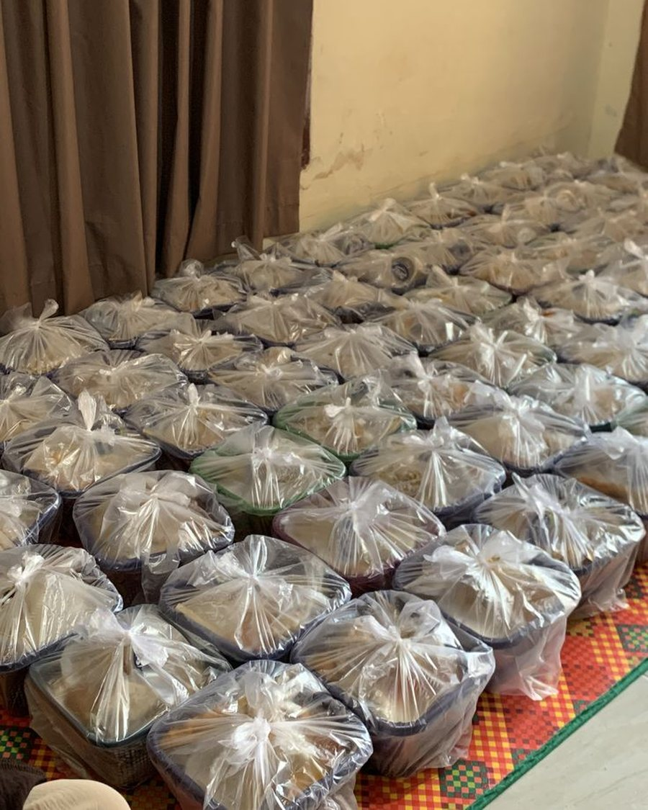
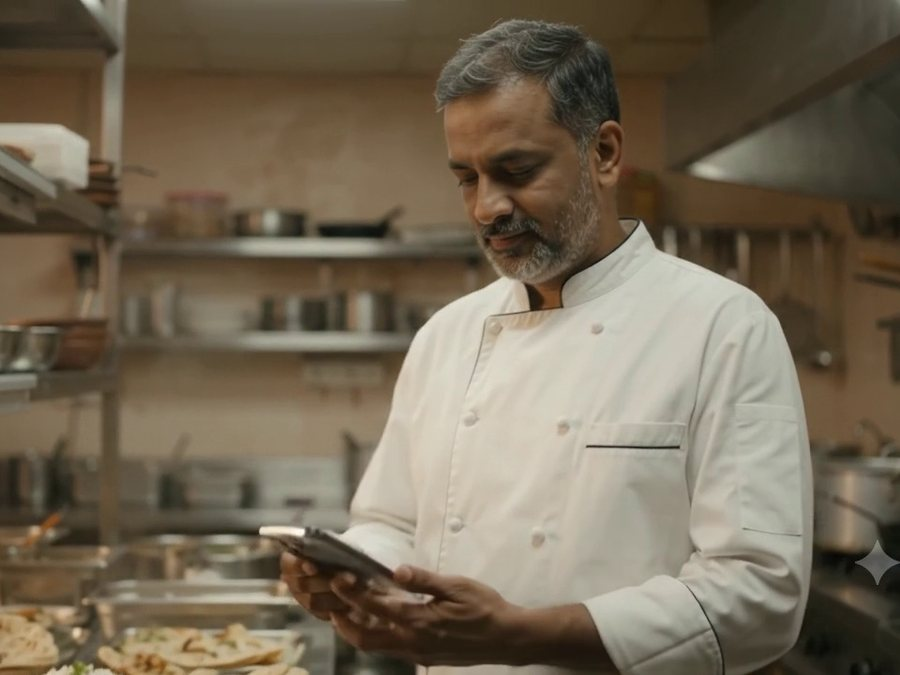

SHAREPLATE · Karnataka, India
Think before you waste.
What you don't need today could become someone's meal today.
Bringing donors, volunteers and community organisations together to make food sharing more accessible.
Food is wasted. Needs remain.
Every day, food prepared with care can go unused. At the same time, many individuals and communities face difficulties accessing regular, nutritious meals.
The challenge is not always a lack of food. Sometimes it is the gap between available food and the people who could benefit from it.
- Surplus after service
- Restaurants, hotels, events and households can have suitable food left over.
- Limited connections
- Donors and distribution organisations don't always have an effective way to find each other.
- Time and coordination
- Food is perishable. Collection and distribution must happen promptly and responsibly.

Between food that goes unused and people who need it, there is an opportunity to connect.
Let's make sharing easier.
SHAREPLATE is built around a simple idea: connect those with suitable surplus food to organisations and communities that can put it to good use.
Food donors
Restaurants, hotels, event organisers and households who list suitable surplus food.
NGO partners
Organisations that help reach communities and coordinate responsible distribution.
Volunteers
People who support coordination and timely collection.
Communities
People and groups who benefit from food-sharing initiatives.
Food safety, appropriate packaging, timely collection and responsible distribution come first. No partnerships are claimed here; this is a concept for a Karnataka launch.
From surplus to shared meals.
- 1
SHARE
Donors provide details about suitable surplus food.
- 2
CONNECT
A suitable NGO or community partner is identified.
- 3
COLLECT
Collection and transportation are coordinated.
- 4
DISTRIBUTE
Food reaches its intended community through responsible distribution.
Illustrative demonstration · not real activity
The Share Journey: 25 portions from a Bengaluru restaurant

Stories of Change
Every meal has a story. Discover how SharePlate transforms surplus food into smiles across communities.
Illustrative · AI-generated videos · not real donations or partners
SharePlate – Turning Surplus into Smiles. Every Meal Matters.
The SharePlate Platform
A working demonstration of food redistribution: list, match, claim and track food. Everything here runs in your browser on sample data.
Demo Data · stored only in your browser · not real activity
Turning good intentions into meaningful action.
Food donation coordination
A simple way for donors to communicate available surplus food.
NGO partnerships
Connections with organisations that can coordinate responsible distribution.
Pickup coordination
Support for organising collection and transport in good time.
Community participation
Ways for volunteers, donors and organisations to take part.
Every shared meal begins with a choice.
Food sharing is not only about the food transferred. It is about responsible consumption, stronger connections and a culture where usable food is valued.
Reducing avoidable food waste
Strengthening community connections
Encouraging responsible food sharing
Illustrative pilot goals · targets, not achieved results
- 1,000meal portions routed towards sharing in a first six-month pilot
- 10NGO and community partners to connect with
- 100donors and volunteers taking part
- Donor
- NGO partner
- Volunteer
- Community
These are impact goals and an illustrative flow, not verified results. No statistics are claimed.
A shared responsibility. A more nourished community.
Be part of the sharing movement.
Whether you are a restaurant, household, volunteer or organisation, your participation can help make food sharing more accessible.
Food is meant to be shared, not wasted.
Think before you waste. Share what you can. Together, we can help good food find its way to people who need it.
Start Sharing